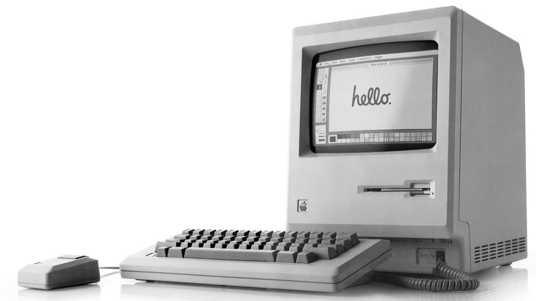
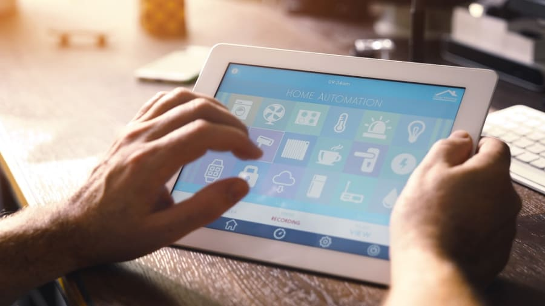
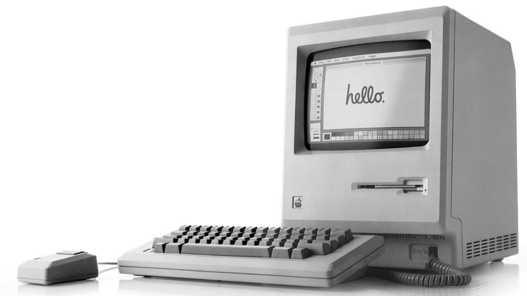
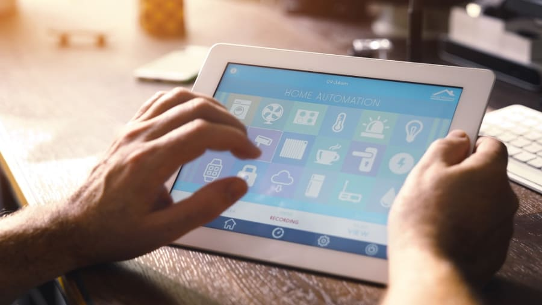

1981-IBM's personal computer

IBM Computer
IBM launched its personal computer in August 1981. The company was first named
"Computing-Tabulating-Recording Company" until they changed the name to "International
Business Machines" in 1924 after Thomas J. Watson became president of the company
in 1914. The company's first experiments with computers in the 1940s and 1950s were
modest advances on the card-based system. The company's great breakthrough came in
the 1960s with its System/360 family of mainframe computers. Its PC wasn't the first
since others had been available since the 1970s the PC's version became incredibly
popular and set standards. The cost was $1,565 and had 40K of read-only-memory and
16K of user memory. It included a build in speaker and could run self-diagnostic
checks. It also used Microsoft's MS-DOS 1.0 which is a 16-bit operating system.
In the late 1980s and early 1990s, the company found difficulty with losses exceeding
to $8 billion in 1993 with the mainframe failing to adjust quick enough to the
"personal computer revolution". After a series of reorganizations, IBM remains one of
the world's largest computer companies and systems integrators.
<1984-Apple's Macintosh
Apple Computer
Steve Jobs launched the first Macintosh in January 1984. The computer was
the first commercially successful personal computer to feature two old, but
still unpopular features: the mouse and the graphical user interface. He
showcased a number of the Macintosh's capabilities like talking to a drawing
application to produce images. He stated that the Macintosh was targeted at
two primary markets, the "knowledge workers" who sit behind desks in businesses
and the college workers. The project to create the Macintosh started in the
late 1970s with Jef Raskin who wanted to name the computer after his favorite
apple, the McIntosh, but later had to change the name due to legal reasons.
He assembled a large development team that designed and built the original
hardware and software for the Macintosh. The design caught the attention of
Steve Jobs who was the co-founder of Apple. The Macintosh 128 was announced
to the press in October 1983 and was introduced in January 1984.
1985-Microsoft launches Windows

Bill Gates
Microsoft is a multinational technology corporation that was founded on April
4th, 1975 by Bill Gates and Paul Allen. In 1980, Microsoft formed a partnership
with IBM to bundle Microsoft's operating system with IBM computers. In 1985 IBM
requested Microsoft to develop a new operating system for their computers called
OS/2. Microsoft produced the operating system and also continued to sell their
alternate which proved to be in direct competition with OS/2. Microsoft launched
Windows 1.0 to market in November 1985 to be used as an operating system with a
graphical interface. Now millions of people worldwide use the latest versions of
Windows. The program eventually overshadowed OS/2 in terms of sales, and when
Microsoft launched several versions of Microsoft Windows in the 1990s they captured
over 90% market share of the world's personal computers. Microsoft now has a global
annual revenue of about $86.83 Billion USD and 128,076 employees worldwide.
2000s-Internet Now
Internet in the 2000s
The 21st century has seen the mass adoption of broadband internet across
the developed world. Today's homes are rapidly transforming into spaces
where traditional computers are with newer pieces of technology like smartphones,
smart TV's, virtual assistants, and tablets. With the simple click of a button,
a song that's being played on a computer in someone's room could be displayed
onto a TV in their living room with a high speed connection. The merging of
physical and virtual worlds is known as the internet now. People are now
accustomed to high-speed downloads, quick browsing, high-resolution streaming
and more. According to the communications regulator of Ofcom, there were
25.3 million fixed broadband connections at the end of 2016 in the U.K.
IBM Computer
IBM launched its personal computer in August 1981. The company was first named "Computing-Tabulating-Recording Company" until they changed the name to "International Business Machines" in 1924 after Thomas J. Watson became president of the company in 1914. The company's first experiments with computers in the 1940s and 1950s were modest advances on the card-based system. The company's great breakthrough came in the 1960s with its System/360 family of mainframe computers. Its PC wasn't the first since others had been available since the 1970s the PC's version became incredibly popular and set standards. The cost was $1,565 and had 40K of read-only-memory and 16K of user memory. It included a build in speaker and could run self-diagnostic checks. It also used Microsoft's MS-DOS 1.0 which is a 16-bit operating system. In the late 1980s and early 1990s, the company found difficulty with losses exceeding to $8 billion in 1993 with the mainframe failing to adjust quick enough to the "personal computer revolution". After a series of reorganizations, IBM remains one of the world's largest computer companies and systems integrators.
1984-Apple's Macintosh
Steve Jobs launched the first Macintosh in January 1984. The computer was the first commercially successful personal computer to feature two old, but still unpopular features: the mouse and the graphical user interface. He showcased a number of the Macintosh's capabilities like talking to a drawing application to produce images. He stated that the Macintosh was targeted at two primary markets, the "knowledge workers" who sit behind desks in businesses and the college workers. The project to create the Macintosh started in the late 1970s with Jef Raskin who wanted to name the computer after his favorite apple, the McIntosh, but later had to change the name due to legal reasons. He assembled a large development team that designed and built the original hardware and software for the Macintosh. The design caught the attention of Steve Jobs who was the co-founder of Apple. The Macintosh 128 was announced to the press in October 1983 and was introduced in January 1984.
1985-Microsoft launches Windows
Bill Gates
Microsoft is a multinational technology corporation that was founded on April 4th, 1975 by Bill Gates and Paul Allen. In 1980, Microsoft formed a partnership with IBM to bundle Microsoft's operating system with IBM computers. In 1985 IBM requested Microsoft to develop a new operating system for their computers called OS/2. Microsoft produced the operating system and also continued to sell their alternate which proved to be in direct competition with OS/2. Microsoft launched Windows 1.0 to market in November 1985 to be used as an operating system with a graphical interface. Now millions of people worldwide use the latest versions of Windows. The program eventually overshadowed OS/2 in terms of sales, and when Microsoft launched several versions of Microsoft Windows in the 1990s they captured over 90% market share of the world's personal computers. Microsoft now has a global annual revenue of about $86.83 Billion USD and 128,076 employees worldwide.
2000s-Internet Now
Internet in the 2000s
The 21st century has seen the mass adoption of broadband internet across the developed world. Today's homes are rapidly transforming into spaces where traditional computers are with newer pieces of technology like smartphones, smart TV's, virtual assistants, and tablets. With the simple click of a button, a song that's being played on a computer in someone's room could be displayed onto a TV in their living room with a high speed connection. The merging of physical and virtual worlds is known as the internet now. People are now accustomed to high-speed downloads, quick browsing, high-resolution streaming and more. According to the communications regulator of Ofcom, there were 25.3 million fixed broadband connections at the end of 2016 in the U.K.